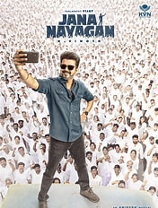

My Multimedia Portfolio Blog🌐 Sponsored by TAP Academy
Welcome to my personal multimedia website. This project demonstrates my understanding of HTML fundamentalsincluding text, images, audio, video, and different types of lists.
About Me
I am a Computer Science student learning Front-End and Full Stack development, currently building strong fundamentals in HTML, CSS, JavaScript, Java, and core programming concepts. I focus on hands-on project building rather than just theory, which helps me understand how real websites work—from structure and multimedia to deployment on the internet. My goal is to grow into a skilled software developer by staying consistent, improving step by step, and applying what I learn through practical projects. I am currently learning HyperText Markup Language>HTML and preparing myself for a career in the IT industry.
Image Gallery 🖼️


Audio Section 🎵
Top 3 Most Watched SONGS and TRAILERS on Youtube:
SONG 1
SONG 2
SONG 3
Video Section 🎬 From Blockbusters to Cartoons: My Favorite Things That Inspire Me
Top 3 Videos & Integrated Thumbnails:
Mersal - All time fav one
Mersal is one of the most powerful Tamil commercial movies that mixes action, emotion, and social message perfectly. Vijay plays a strong triple role and proves his versatility as an actor. The movie mainly highlights medical corruption and how innocent people suffer because of greed. Atlee’s direction keeps the story engaging with good twists and gripping screenplay. The songs and background score make the movie feel grand and intense. The emotional moments between family characters are handled beautifully. The action scenes are stylish and full of mass moments for fans. The visuals, editing, and dialogues make Mersal a memorable experience. Overall, it’s a full package entertainer with a meaningful message.
TAP Academy - Gamify Learning Experience
TAP Academy is a great learning platform for students who want to build strong coding skills. It provides structured training in programming, data structures, and web development. The best part is their clear teaching style which makes concepts easy to understand. They focus on both theory and practical coding which is perfect for placements. TAP Academy also conducts mock interviews and aptitude practice regularly. Their mentorship helps students improve step by step without confusion. The projects and assignments make learning more hands-on and useful. They encourage consistency and discipline which is needed in a coding journey. With the right effort, TAP Academy can help students crack jobs confidently. It is a strong option for beginners and intermediate learners in software careers.
Shinchan - The Funniest Cartoon Ever
Shinchan is one of the funniest and most loved cartoon characters ever. His naughty behavior and savage dialogues make every episode entertaining. Even though he acts silly, he sometimes teaches valuable life lessons. Shinchan’s friendship with Kazama, Nene, Masao, and Bochan is very cute. The bond between Shinchan and his family is also hilarious and relatable. Misae’s anger, Hiroshi’s comedy, and Himawari’s cuteness make it complete. Shinchan always creates chaos but ends up making everyone laugh. The show is enjoyed by kids as well as adults because of its humor. Every episode feels light, fun, and stress-relieving. Shinchan is not just a cartoon, it’s a whole mood.